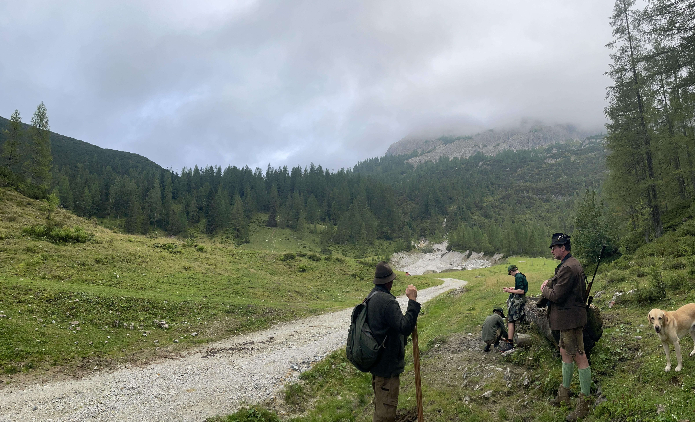
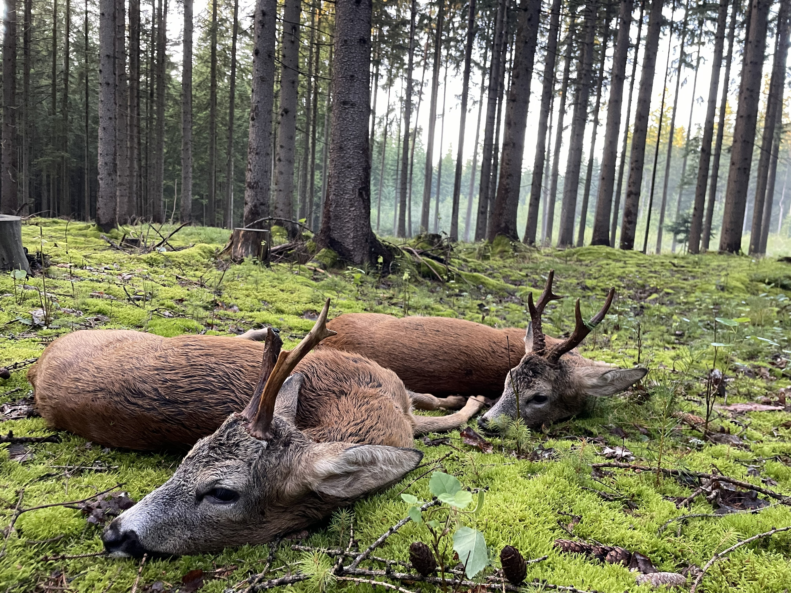
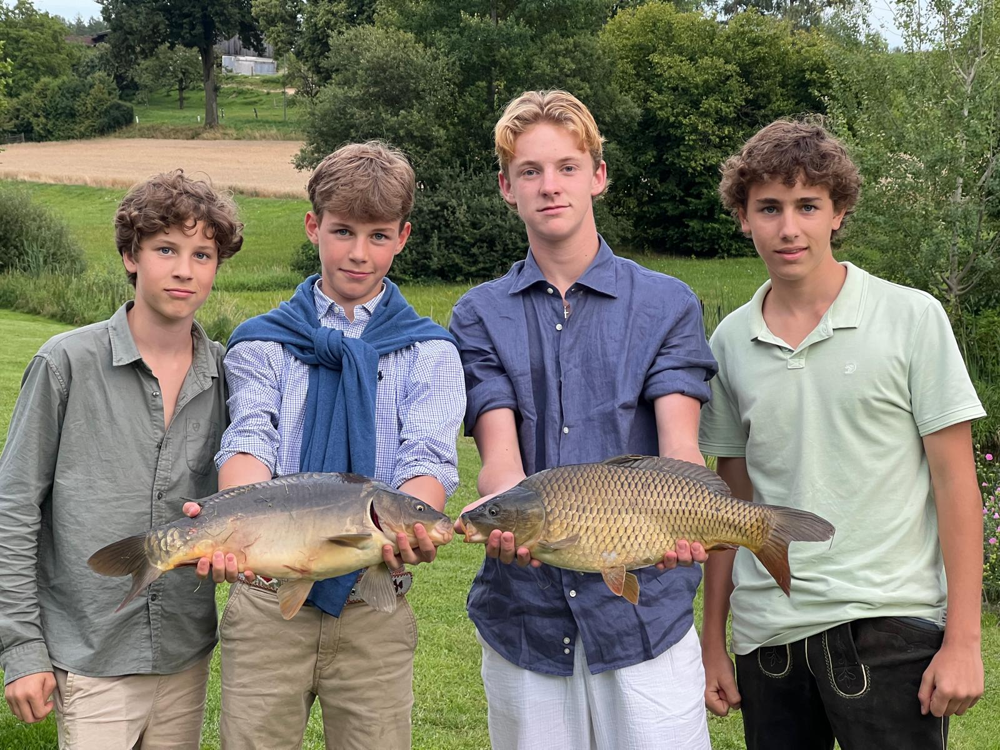

Fur & Fin
YouTube Field Archive
Hunting, fishing and quiet moments in Lower Austria

Field Footage
Moments outdoors, filmed as they happened.
Hunts, catches and the quiet in-between moments are all headed here.
Video Library
From The Field
Hunting days, fishing moments and short clips from time outdoors.

Hunting Driven Days & Stand HuntsHunting Stories
Early starts, quiet movement and the real pace of a day in the field.

Fishing Sessions At The WaterFishing Days
Catches, setups and those slower moments that make the water worth returning to.
Short Outdoor Moments
Small clips, atmosphere and the parts of the day that do not need much explanation.